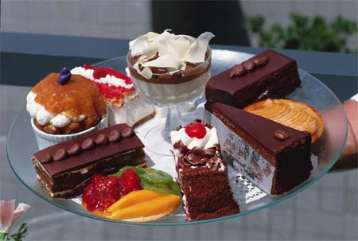

Английские десерты
Разные страны мира представляют свои блюда. Часто бывает так, что в состав этих блюд входят продукты, которые нам совсем чужды. Большинство людей предпочитают привычные блюда, чем что-то новое.

Что касается английской кухни и, в частности, английских десертов, то они также имеют свои особенности. Известным английским десертом является трайфл, который являет собой бисквит, пропитанный фруктовым соком, вином, ликером, а также различными желе, кремами, меренгами и другими сладостями. Все компоненты измельчаются небольшими кусками и чередуются в посуде, в результате чего получается многослойный нежный десерт. Такой десерт очень просто готовится, даже само название в переводе означает «мелочь», «пустяк».
Если хотите порадовать своих близких и быстро приготовить что-то сладкое, то стоит попробовать этот замечательный английский десерт. Нужно просто запастись необходимыми продуктами, которые у каждой хозяйки разные и выделить десять минут на приготовление. Попробуйте английские десерты с незабываемым вкусом.